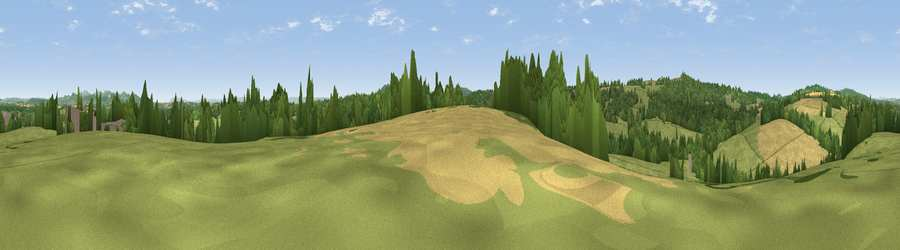

Viewpoint near Kempley
#31047 in England · top 70% of its area beats it · near KempleyWhere it is
The exact computed spot (SO 65975 29025). Click the marker for map links.
The view, rendered

A 360° render of this exact spot computed from the terrain model, tree cover and land cover — summer colours, afternoon light, calibrated against photographs of famous viewpoints. Real trees, hedges and buildings will differ in detail.
The panorama
Grey silhouette: terrain skyline in each direction (720 bearings, Earth curvature and refraction included). Dashed green: skyline with trees (+15 m) and buildings (+8 m) as obstacles. Blue strip: how far the ground is visible on each bearing.
Where the view opens
Wedge length = distance to the farthest visible ground on that bearing (vegetation-aware). Rings at 10, 25 and 50 km.
What fills the view
51% grassland · 26% woodland · 21% cropland ·
Angular shares of the visible panorama (visual magnitude), not map area. Landscape diversity 0.46 (0–1 Shannon).
Key numbers
More beautiful places nearby
The staircase of upgrades: each row has a higher view potential than everything closer. Driving times are estimates from straight-line distance, calibrated against real road routing — check an actual route before setting out.
| Place | Direction | Drive | Score |
|---|---|---|---|
| Viewpoint near Upton Bishop | S · 1 km | ~2 min | 54.2 |
| Viewpoint near Crow Hill | W · 2 km | ~6 min | 73.6 |
| Viewpoint near Much Marcle | NW · 5 km | ~11 min | 75.4 |
| Viewpoint near Woolhope | NNW · 6 km | ~12 min | 80.7 |
| Viewpoint near Putley | NNW · 9 km | ~18 min | 80.9 |
| Viewpoint near Tarrington | NNW · 11 km | ~20 min | 81.4 |
| Seagar Hill | NNW · 11 km | ~21 min | 82.1 |
| Ragged Stone Hill | NE · 12 km | ~23 min | 82.5 |
51.95866, -2.49657 · source: screening · position refined by local search. Computed location — check access rights before visiting.